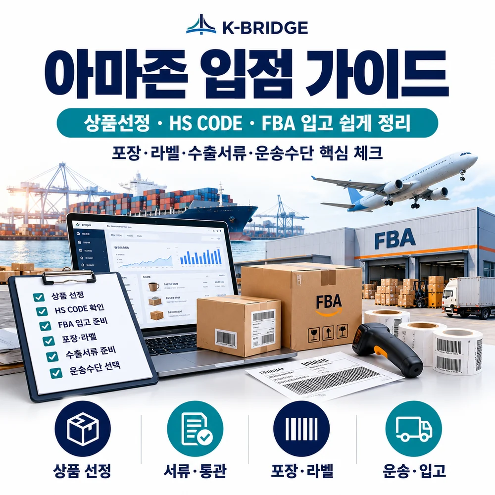
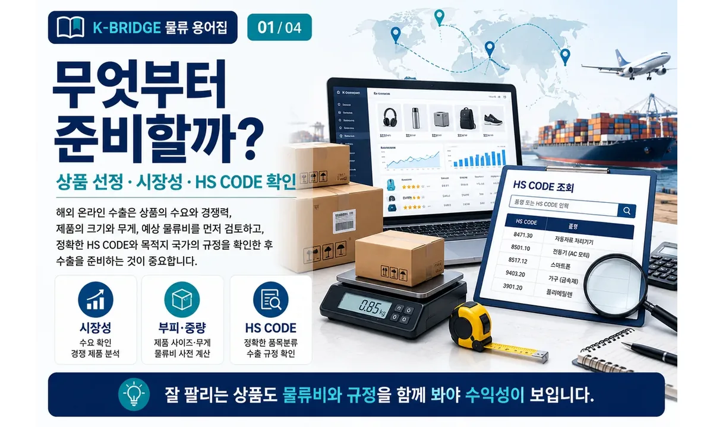
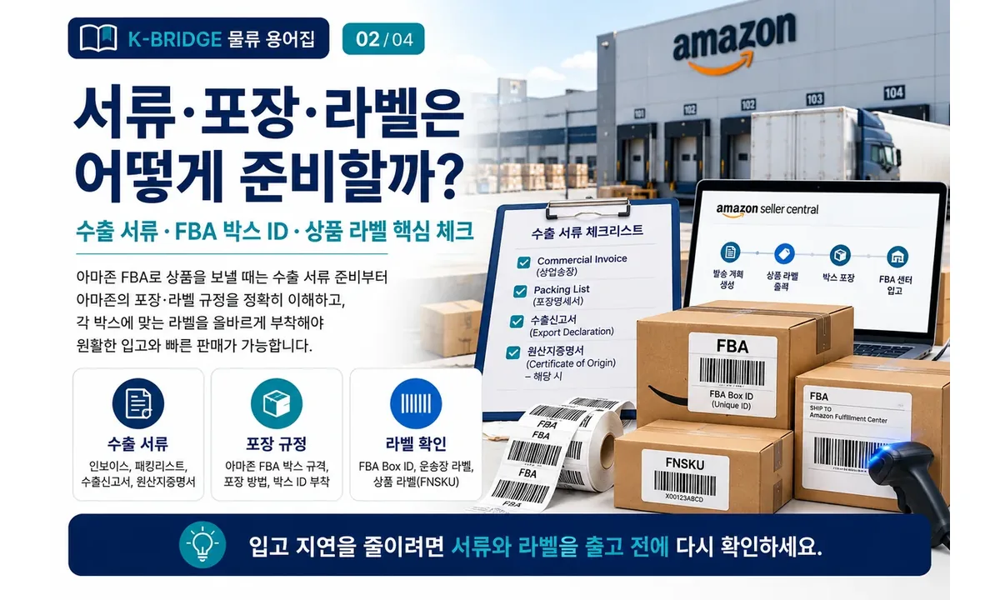
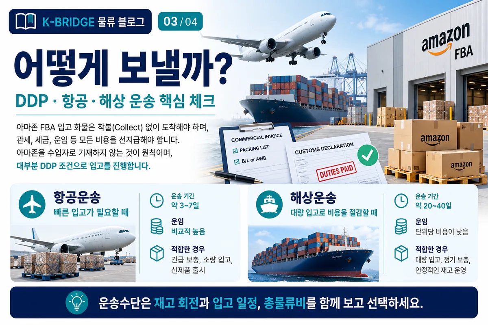
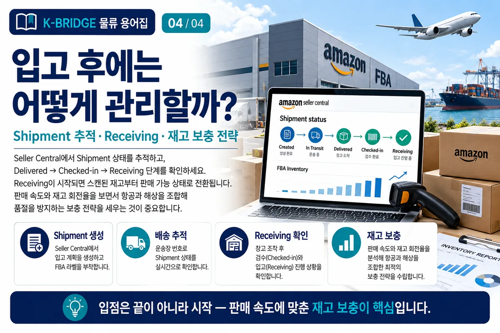

핵심 요약
아마존 FBA 입점 물류는 상품을 고른 뒤 바로 발송하는 일이 아니라, 판매국 규정·HS CODE·서류·라벨·통관·국제운송·FBA 입고·재고 보충까지 한 흐름으로 설계하는 작업입니다. 초기에 가장 중요한 것은 판매 가능성뿐 아니라 총물류비와 규정 리스크를 함께 확인하는 것입니다.
아마존 FBA 입점 물류, 전체 흐름부터 보세요
FBA 입점 준비는 상품 등록과 국제운송을 따로 보는 것보다, 상품이 한국에서 출발해 현지 FBA 센터에서 판매 가능 재고가 될 때까지의 전체 흐름을 먼저 그리는 것이 중요합니다.

1. 상품 선정: 판매 가능성과 물류비를 같이 봐야 합니다
잘 팔릴 가능성이 높은 상품이라도 크기·무게·포장 방식·판매국 규제에 따라 실제 수익성이 달라질 수 있습니다. 판매가와 경쟁 상품만 보지 말고 국제운송비, FBA 입고·보관 부담, 재고 회전까지 함께 확인해야 합니다.
시장성
검색 수요, 경쟁 상품, 목표 판매가, 예상 판매량을 확인합니다. 판매량이 있어도 마진이 지나치게 낮으면 운송비 변화에 취약할 수 있습니다.
부피·중량
제품 자체가 아니라 최종 포장 후 크기와 무게를 확인합니다. 국제운송과 FBA 비용은 포장 규격 변화에도 크게 영향을 받을 수 있습니다.
규정·인증
식품·화장품·배터리·전기전자제품 등은 판매국의 인증, 표시, 위험물 또는 수입 제한 여부를 상품 발주 전에 검토합니다.
2. HS CODE: 상품 발주 전에 확인하는 것이 좋습니다
HS CODE는 수출입 신고, 관세율, 수입요건과 규제 검토의 출발점입니다. 상품명만 보고 정하기보다 재질·용도·구성·작동 방식 등 실제 품목 정보를 기준으로 분류해야 합니다.
- 상품 정보를 구체화합니다. 재질, 용도, 구성품, 작동 방식과 카탈로그 정보를 정리합니다.
- 판매국 기준 세부 분류를 확인합니다. 같은 품목이라도 국가별 세부 코드와 관세율, 수입요건이 달라질 수 있습니다.
- 규제 가능성이 있으면 선적 전에 확인합니다. 분류가 애매하거나 인증·허가가 연관되는 품목은 전문가 검토를 거치는 편이 안전합니다.

3. 수출·통관 서류: 기본 서류와 품목별 추가서류를 나눠 준비하세요
국제운송 서류는 “무엇을, 얼마에, 몇 개, 어떤 조건으로 보내는가”를 일관되게 보여줘야 합니다. 기본적으로 Commercial Invoice와 Packing List가 중심이 되고, 운송 방식에 따라 B/L 또는 AWB가 연결됩니다.
| 서류 | 주요 내용 | 실무 체크 |
|---|---|---|
| Commercial Invoice | 품명, 수량, 단가, 금액, 거래조건 | 신고 내용과 품명·금액 일치 |
| Packing List | 박스 수, 수량, 순·총중량, 포장 정보 | 실제 포장 수량·중량과 일치 |
| B/L 또는 AWB | 운송 구간과 화물 정보 | 수하인·목적지·화물정보 확인 |
| 추가 증빙 | 원산지, 인증, 허가 등 | 품목·판매국별 필요 여부 확인 |
주의: Invoice, Packing List, 선적 정보와 실제 화물의 품명·수량·중량이 서로 다르면 통관 또는 입고 단계에서 확인 작업이 늘어날 수 있습니다.
4. FBA 포장·라벨: 상품 라벨과 배송 박스 라벨을 구분하세요
상품을 식별하는 바코드와 FBA 배송 박스를 식별하는 라벨은 역할이 다릅니다. Shipment를 만들 때 Seller Central에 입력한 SKU·수량·박스 정보와 실제 포장 내용이 일치하도록 관리하는 것이 중요합니다.
상품 바코드
SKU 설정에 따라 제조사 바코드 또는 Amazon 바코드 등 필요한 라벨링 방식을 Seller Central에서 확인합니다.
FBA Box ID
배송 박스마다 해당 Shipment에서 생성된 고유 Box ID 라벨을 사용하고, 박스 정보와 실제 내용물을 맞춥니다.
부착 위치
바코드가 접히거나 손상되지 않도록 박스 이음새·모서리를 피하고 평평한 면에 부착합니다.
팔레트 출고
팔레트 방식이라면 박스 라벨 외에 팔레트 단위 라벨·적재 요건도 함께 확인합니다.

5. 수입 통관과 국제운송: 운송수단보다 책임 구조를 먼저 정하세요
해외 FBA 센터로 재고를 보낼 때는 누가 수입자가 되고, 누가 관세·세금을 납부하며, 어떤 서류로 통관할지를 출발 전에 확정해야 합니다. Amazon이 판매자의 수입 관세나 세금을 대신 부담하는 구조로 생각하면 안 됩니다.
| 구분 | 항공운송 | 해상운송 |
|---|---|---|
| 적합한 상황 | 긴급 보충, 소량 입고, 신제품 초기 물량 | 대량 입고, 정기 보충, 계획형 재고 운영 |
| 장점 | 상대적으로 짧은 운송 리드타임 | 대량 화물의 단위당 운송비 절감 가능 |
| 주의점 | 중량·부피가 커질수록 운임 부담 확대 | 선박·항만·통관·내륙운송까지 일정 관리 필요 |
| 운영 포인트 | 품절 방지용 보충 물량에 활용 | 판매예측 기반 계획 물량에 활용 |
주의: 실제 운송기간과 비용은 출발지·목적지, 성수기, 항공편·선박 스케줄, 통관, 최종 내륙운송 조건에 따라 달라집니다.

6. FBA 입고: 센터 도착과 판매 가능 재고는 같은 시점이 아닙니다
운송사 기준으로 배송이 완료되어도 Amazon의 입고·스캔·처리가 끝나기 전까지는 전체 수량이 바로 판매 가능 상태가 되지 않을 수 있습니다. Seller Central에서 Shipment와 Receiving 진행을 확인하고 예상 수량과 실제 처리 수량을 비교해야 합니다.
- 배송 완료 여부 확인: 운송사 추적정보와 FBA 배송 상태를 함께 봅니다.
- Receiving 진행 확인: 입고 처리 중인 수량과 판매 가능 수량의 변화를 확인합니다.
- 수량 차이 점검: Shipment에 입력한 박스·SKU 수량과 실제 스캔 수량을 비교합니다.
- 지연 원인 확인: 라벨, 박스 내용, 상품 준비 요건 등 보완 사항이 있는지 확인합니다.
7. 첫 입고 이후에는 ‘판매’보다 ‘재고 보충’이 물류의 핵심이 됩니다
보충 시점은 현재 재고만 보고 정하는 것이 아니라 판매 속도와 다음 발주·생산·국제운송·통관·입고까지 걸리는 전체 리드타임을 함께 봐야 합니다.
한 가지 운송수단만 고정하기보다 기본 물량은 해상, 부족 가능성이 생기면 일부 항공처럼 재고 상황에 맞춰 조합하는 방법을 검토할 수 있습니다.
8. 아마존 FBA 출고 전 실무 체크리스트
- 상품: 판매국의 금지·제한 품목, 인증·표시 요건을 확인합니다.
- HS CODE: 품목분류, 예상 관세·세금과 수입요건을 확인합니다.
- 서류: Invoice·Packing List·운송서류의 품명·수량·중량을 맞춥니다.
- 상품 라벨: SKU별 바코드 적용 방식을 Seller Central에서 확인합니다.
- 박스 라벨: 각 박스의 FBA Box ID와 운송사 라벨이 서로 가리지 않도록 부착합니다.
- 박스 내용: Shipment에 입력한 SKU·수량과 실제 포장을 일치시킵니다.
- 통관: 수출자·수입자·관세/세금 납부 구조를 확정합니다.
- 운송: 항공·해상의 리드타임과 총물류비를 비교합니다.
- 입고 후: Shipment·Receiving 상태와 판매 가능 재고를 확인합니다.
- 보충: 판매속도와 전체 리드타임을 기준으로 다음 발주 시점을 정합니다.
KEY TAKEAWAYS
이 글에서 기억할 것
- 상품 · 규정 먼저 확인
- 서류 · 라벨 정확하게 준비
- 통관 · 운송 조건 사전 확정
- 입고 후 재고 보충까지 관리
9. 자주 묻는 질문
Q. FBA로 보내는 모든 배송 박스에 라벨이 필요한가요?
각 배송 박스는 해당 Shipment에서 요구하는 Box ID 라벨을 기준으로 식별되도록 준비해야 합니다. 박스 내용정보와 실제 상품 구성이 맞는지 함께 확인하고, 팔레트 배송이라면 팔레트 관련 라벨 요건도 별도로 확인합니다.
Q. 상품마다 반드시 FNSKU 라벨을 붙여야 하나요?
모든 상품에 무조건 동일한 방식이 적용되는 것은 아닙니다. SKU와 계정 설정에 따라 제조사 바코드 또는 Amazon 바코드 적용 방식이 달라질 수 있으므로, 출고 전에 해당 상품의 라벨 요구사항을 Seller Central에서 확인해야 합니다.
Q. Amazon을 수입자(Importer of Record)로 지정해도 되나요?
Amazon이 판매자의 수입 관세·세금을 대신 부담하는 것으로 전제하면 안 됩니다. 판매자 또는 지정한 수입·물류 파트너가 현지 수입자 요건과 통관 책임을 확인하고, 화물이 관세·세금 미정산 상태로 센터에 도착하지 않도록 준비해야 합니다.
Q. FBA 발송에는 DDP 조건을 반드시 사용해야 하나요?
특정 인코텀즈를 모든 FBA 발송에 일률적으로 적용하는 것이 핵심은 아닙니다. 중요한 것은 실제 계약 구조에서 수입자, 통관, 관세·세금, 최종 배송 책임이 누구에게 있는지 명확히 하고 Amazon에 비용이 청구되는 상황을 만들지 않는 것입니다.
Q. Commercial Invoice와 Packing List는 어떤 부분이 반드시 맞아야 하나요?
품명·수량·중량·포장정보가 실제 화물과 일관되어야 합니다. Invoice의 거래정보와 Packing List의 박스별 포장정보, 운송서류의 화물정보가 서로 다르면 통관 과정에서 추가 확인이 필요할 수 있습니다.
Q. 항공운송과 해상운송 중 어느 쪽이 더 좋은가요?
정답은 재고 상황에 따라 달라집니다. 긴급 보충·소량 물량은 항공이 유리한 경우가 많고, 계획 가능한 대량 입고는 해상으로 단위당 운송비를 낮출 수 있습니다. 운임만 보지 말고 품절 손실과 보관비까지 함께 비교해야 합니다.
Q. 운송조회에는 배송 완료인데 왜 FBA 재고가 바로 잡히지 않나요?
센터 도착 이후에도 체크인·스캔·Receiving 과정이 남아 있기 때문입니다. Seller Central에서 입고 처리 상태와 수량을 확인하고, 장시간 차이가 지속되면 해당 Shipment의 문제 또는 보완 요청이 있는지 확인합니다.
Q. 다음 재고는 언제 발송하는 것이 좋나요?
현재 재고가 거의 소진된 뒤가 아니라, 판매속도와 다음 물량의 전체 리드타임을 역산해 결정해야 합니다. 생산·출고·국제운송·통관·FBA 입고에 필요한 시간을 합산하고 안전재고를 두어 보충 시점을 잡는 방식이 안정적입니다.
아마존 FBA 입고는 상품 준비부터 통관·운송까지 한 흐름으로 확인해야 합니다
KBRIDGE는 해상·항공·통관·창고·국내운송을 연결해 FBA 출고 일정과 화물 조건에 맞는 국제물류 흐름을 함께 검토합니다.